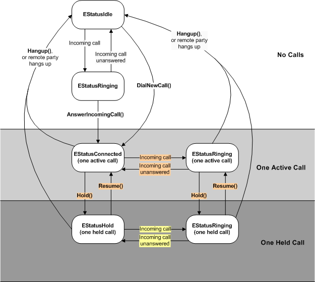

Single
Call Tutorial
This tutorial describes how to handle single call with the telephony
API for applications.
This state diagram
shows how to dial or answer one call at a time. It presumes there are no other
calls being made.
Figure 1. Single Call State Diagram

The boxes are states. The enumeration value in each box is the status
of the voice line. Voice
line status describes the states and their meaning. You can also find
the status of individual calls. The line state and the call state are the
same in a single call.
The arrows show events that trigger a change
of state. In these events, a word in bold indicates a CTelephony method
that you can call.
Check the Voice
line status
if the line is Idle(CTelephony::EStatusIdle) no calls
are in progress
if the line is on hold(CTelephony::EStatusHold) then
there is another call in progress, but it is on hold and you can still dial
or answer a second call
if a call is active, you must wait until it completes before you can
dial or receive a call. To detect when this occurs, see Notification
Request Tutorial
Dial a call
While no calls are in progress, the line status is CTelephony::EStatusIdle.
To dial a call, use CTelephony::DialNewCall().
If successful and the remotes party answers the call then the line status
is CTelephony::EStatusConnected.
Answer a call
When no calls are in progress, the line status is CTelephony::EStatusIdle.
When a remote party calls your phone, the voice line status will change
to CTelephony::EStatusRinging.
When the status is CTelephony::EStatusRinging, use CTelephony::AnswerIncomingCall() to
answer the call. The status changes to CTelephony::EStatusConnected and
the phone user can talk to the remote party.
Terminate a
call
Detect remote
party call termination
Hold a Call
Resume a call
Send DTMF tones
When you successfully dial or answer a call, you will be given
a
CTelephony::TCallId the identifies the call.
A remote party might try to ring your phone. The voice line state will
change to CTelephony::EStatusRinging. You can ignore this
call. You can still terminate, hold, resume and send DTMF.
Copyright ©2010 Nokia Corporation and/or its subsidiary(-ies).
All rights
reserved. Unless otherwise stated, these materials are provided under the terms of the Eclipse Public License
v1.0.